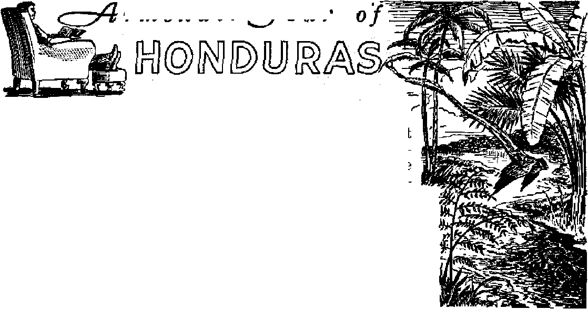
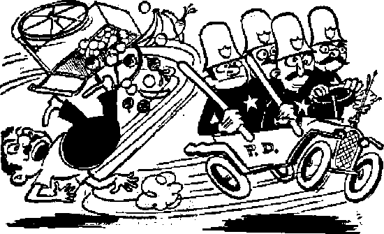

Striking proof that religious meddling in politics does not bring God into government
A glimpse of its natural resources, industry, agriculture
What makes us laugh? How much should we laugh?
THt MISSION OF THIS JOURNAL
News sources th&tf are able to keep you awake to the vital issues of cur times must be unfettered by censorship and selfish interests. “Awake I” has no fetters. It recognizes facts, faces facts, is free to publish facts. It is not bound by political ^mbitions or obligations; it is unhampered by advertisers whose toes must not be trodden on; it is unprejudiced by traditional creeds. This journal keeps itself free that it may speak freely to you. But it does not abuse its freedom. It maintains integrity to truth,
“Awake l,s uses the regular news channels, but is not dependent on them. Its own correspondents are on all continents, in scores of nations. From the four corners of the earth their uncensored, on'the-scenes reports come to you through these columns. This journal’s viewpoint is not narrow, but is international. It is read in many nations, in many languages, by persons of all -ages. Through its pages many fields of knowledge pass in review—government, commerce, religion, history, geography, science, social conditions, natural wonders—why, its cover* age is as broad as the earth and as high aa the heavens,
“Awake I” pledges itself to righteous principles, to exposing hidden foes and subtle dangers, to championing freedom for all, to comforting mourners and strengthening those disheartened by the, failures of a delinquent world, reflecting sure hope for the establishment of a righteous New World.
Get acquainted with “Awake 1” Keep awake by reading “Awake!”
Published SBJflJfONiiTLY by WATCHTOWER BIBLE AMD TRACT SOCLETT, INC.
117 Adams Street Brooklyn lt N. U. S. A.
N. H. Knorr, Preside?# Grans? Suiter, £tecrefarjf
Five cents a copy One dollar a year
tan [fiances should be sont to offica la yonf emnb try ju compliance with regulations to guarantee safe deliver; Of mew. Remittances are accepted tt Brooklyn from countries where no office 1h located, fay interaatlonal money order only. Subscription rates in different countries are here stated in local Currency.
Notice of expiritlra (with renewal blanft) is sent 4t least two Issues before subscription espirei.
ChaiTfO of rfftwr when'sent to crur office may be expected effective within one month. Send your old ag well as new address.
Ottlcw Yearly Subscription Rato
America, U.3., 117 Adams St., Brooklyn 1, N.I. 11 A astral la, 7 Beresford Rd., Strathfield, N.S.W. 6s Canada, 40 Irwin Ave., Toronto 5, QnUrio Si Enrland, 34 Craven Terrace. London, W. 2 &
Sbltb Africa, 623 Buskirk House. Cape Town 5b
Entered <9 second-class matter at Brooklyn, N. Y., Act of March 3, 1379. Printed in U. & A.
CONTENTS
Political Clergy in Czechoslovakia
Tiso's Regime and Its Disintegration
Postwar Activity of the Hlinka Party
Goebbels Diary on Jehovah’s witnesses
Natural Resources, Industry, Agriculture 10
Count the Cost of Competitive Sports
Blood Money
The Pope and God
“The Bible Is a Catholic Book’
“Thy Word Is Truth”
A City from Heaven Awaited
Pan-Americans See Bogota
Watching the World 29
©'“Now it is high time to awake.'—Romans 13:1/ 9)
Volume XXIX Brooklyn, N. Y.» July 8, 1948 Number 13
Political Clergy in Czechoslovakia
rFHE Czechoslovakian Republic is a J. small state in the heart of Europe, with around 12,000,000 inhabitants, which came into existence after the dissolution of the Austro-Hungarian Monarchy in the year 1918, by uniting the three Slav countries Bohemia, Moravia and Slovakia. This comparatively youthful state has already experienced many a critical crisis and upheaval since it came into being, with assaults from without and turmoil within.
Jn the years 1938-1939 it was crushed and invaded by the vassals of Hitler with the assistance of Fascist-minded elements within the state itself, led by the political clergy of the Roman Catholic Church. When, in 1945, Czechoslovakia was restored to its former status, the same circle of people began the very same disintegrating work as before World War II, and hatched up a conspiracy.
It is interesting to see with what cunning confusion of politics and church, with abuse of God’s Word, simple people can be misled. Many interesting things have come to light during the investigation of this subversive conspiracy. Several hundred persons have been held under arrest, among them distinguished political and military personages, not to nfention clergy of the Roman Catholic Church and nuns. As the threads of the Conspiracy lead back several years into the time of the Tiso regime and still farther into the latter years of the Czechoslovakian Republic before World War II, it would be of interest to briefly review the events of recent years.
Efforts to Crush Czechoslovakia
In the period between the first and the second world war, the Slovakian Hlinka party, designated thus after its leader, the Catholic priest Andrej Hlinka, was the strongest political organization in Slovakia. It was the party of the Slovakian Catholics. Primarily, Hlinka zealously advocated separate autonomy for Slovakia, within the framework of the Czechoslovakian Republic; but later, influenced by more radical collaborators, he set himself entirely to separatism. One of his most influential colleagues was the priest Dr. Joseph Tiso; already minister in 1926, and chosen by Hlinka as his successor as leader of the party.
When, in 1938, Hlinka died and Tiso took over the party leadership, he recognized that the most favorable moment had arrived for him to crush the Czechoslovakian Republic, and to install himself as dictator of Slovakia. The major part of the blame for the political crisis, which, in the same year, led to the Munich dictatorship, and finally to the devouring of the whole of Czechoslovakia by Hitler’s power, can be ascribed to his efforts.
Events progressed rapidly, one news item overtook the former in precipitous haste. The radical elements of the Hlinka party organized the Hlinka-Guard entirely after the pattern of the Nazi SS and SA.
Soon Tiso’s government dissolved all political parties other than the Hlinka party, which they proclaimed as totalitarian. They suspended the press of all other parties, took over their printing houses, buildings and other undertakings and confiscated- all other possessions in favor of the Hlinka party. The state crisis reached its climax when the priest, Dr. Joseph Tiso, traveled to Berlin with the minister of justice, Ferdinand Durcansky, in his function as president of the Slovakian autonomic government, on March 13, 1939, where they discussed the separation of Slovakia from the Czechoslovakian Republic with Chancellor Adolf Hitler and his foreign minister, Ribbentrop. The next day the Slovakian Parliament proclaimed Slovakia as an independent state, thus helping Hitler to an undisturbed occupation of Bohemia and Moravia.
Tiso’s Regime and Its Disintegration
The spirit of Nazism and the Gestapo penetrated more and more into the Hlinka-Guard, and the Hlinka-Youth were trained under the direct assistance of German instructors. The collaboration of the Hlinka party units and the Gestapo was very close in many ways, and their members fought shoulder to shoulder with the Nazi SS in World War II. According to the opinion of certain Catholics, this fact has greatly exposed Catholicism in Slovakia. The Hlinka-Guard terrorized and ruthlessly suppressed everything not pertaining to the Hlinka party, and enriched themselves by exploitation, plundering, confiscation and appropriation of the property of their political opponents and the Jews. Freedom of press and assembly, freedom of speech and education, and the freedom of true worship disappeared, and with them all the remaining human rights and security of property.
As commander-in-chief of the army, Tiso wrote an article addressed to his soldiers, which -was published in the paper Slovenske. Vojsko (Slovakian Army) on July 3, 1941, in which, among other things, the following can be read: “You have enrolled yourselves in the victorious German front on the side of all Christian nations of Europe, in order to turn aside the danger of hell from your own. nation and from Europe. Rightly.you designate yourselves as crusaders of the anti-bolshevist campaign.” A significant speech for a Catholic priest!
In solving the Jewish question, the Tiso government adopted, in their entirety, the methods of Hitler’s gestapo in the years 1941-1942. This applied not only to the rights and properties of the Jews but to human life itself. Packed into cattle trucks by the thousands, they were led to mass death in German camps. Slovakian bishops consented to this solution of the Jewish problem, which strengthened Tiso in his intentions, and, in a speech in Halic on August 16, 1942, he declared that the removal of the Jews lay in the interests of the self-preservation of the nation; and to rid oneself of one’s enemies was Christian. Leading factors of Catholicism in Slovakia identified themselves wholly with Tiso’s regime and with all he undertook in collaboration with Nazi Germany. The archbishop Kmetko, as chairman of bishops’ conferences, sent Tiso a letter in the name of all the bishops on November 15, 1943, declaring: “The Catholic clergy have a lion’s share in the bringing forth of the Slovakian state, and will number among its most devoted citizens.”
When it became as clear as day that the fall of Hitler’s regime was only a question of a few months, which would also mean the fall and the end of his allies and the Slovakian state, the leading men of the Hlinka party determined to make preparations for the postwar period. They called some of their men from their political engagements and entrusted them with a commission for the postwar activities. Their money was deposited abroad. They assigned the various appointments, and designated who should be sent abroad, and who should illegally prepare the collapse of the expected Czechoslovakian state at home. Foreign Minister Dr. F. Durcansky, who, in the year 1939, had signed the treaty for the protection of the Slovakian state with Ribbentrop, grasped the initiative. He gathered men around him who were devotees of the Hlinka ideology, allotted the duties and dealt out instructions for the coming activity inimical to the state. Thus, in March, 1945, Durcansky and his collaborators went abroad to previously assigned appointments, in order to direct the illegal activity in Slovakia from these strategic positions.
Postwar Activity of the Hlinka Party
The former ambassador of Tiso to the Vatican, Karol Sidor, gathered around him a further group of supporters, who pursued the same aims as Durcansky’s group; but it appears that these two most prominent groups could not come to an agreement as to the methods of carrying out the conspiracy. While Sidor advocated consolidating the position of his men in political and state functions in the newly established Republic and for biding his time for a favorable moment, Durcansky was for an immediate rising. The followers of Durcansky who had remained in the country itself began to assemble former members of the Hlinka-Guard and the Hlinka-Youth movement around them, organized them in a military way after the principles of the Fuhrer regime and in the spirit of unqualified obedience to all orders. This illegal organization was renamed “Tiso’s divisions in readiness [or “ready for action”]”. Its members swore a secret oath of allegiance to their superiors and the Slovakian state. The activity of this subversive movement tendered its branches, so to speak, into all districts of Slovakia during the next two postwar years.
In the meantime the former president of the Slovakian state, the Roman Catholic priest, Dr. Joseph Tiso, was delivered up to the Czechoslovakian government as a war criminal, and the special court in Bratislava investigated his whole political past. Prominent clergy made efforts to help Tiso and to liberate him, but when they were forced to recognize that this was not possible, then they at least rendered him assistance in his defense before the National Court. The sympathizers of the Hlinka party bolstered up their hopes that Tiso would not be convicted, and set the whole mechanism moving in his favor. The Slovakian Catholic allows himself to be easily drawn into rash actions by his spiritual leaders, and it therefore meant no strenuous effort on the part of the clergy to provoke demonstrations in the larger cities for the liberation of Tiso. We will mention a few interesting moments in the provocation of the Hlinka party’s underground activity, which indicate the political character in alliance with the clergy.
In Piestany the demonstrators assembled in the Jesuit church, from which point they set out in procession, carrying images of the Virgin Mary and epigrams against the Czechs and Jews. When singing the Tiso hymn the demonstrators raised their hands in Fascist salute. In other places, conscious of the danger, they cowardly sent fanatical women at the head of the processions. One priest celebrated the mass seventy times for Tiso, and others spoke continually of Tiso’s case in the churches. Political Catholicism now felt itself so strong that it did not shrink from inciting open actions against the state, and this not only in isolated cases but organized throughout the whole territory of Slovakia. The adherents of the Hlinka party fought for their leader, and political Catholicism for the representative of their ideas.
The trial of Tiso and his colleagues revealed a multitude of crimes against the interests of the population and against humaneness. Tiso denied what he could, feigned stupidity, and cowardly shifted all blame onto others. However, he became fortified in his self-confidence by the demonstrations of his backers and by the promises of some that they would liberate him; so that, finally, in his defense, Tiso expressed no regret for his acts, but in self-assertion declared that he would act precisely in the same way if he had the opportunity of doing so again. This Catholic priest would establish Fascist totalitarianism all over again; he would again connive with Nazism; and would again send thousands of Jews to a premature death. But contrary to the expectations of the underground movement of the supporters of the former Hlinka party, Tiso was condemned to death by hanging, and the sentence was executed.
Catholicism and its leading in Slovakia came into a peculiar situation on account of these happenings. They had endeavored to attain their aims by party politics, and not by means of the church. Under Tiso’s Slovakian state they had been completely absorbed in an unclean business, full of violence and bloodshed; and the Hierarchy had played a reckless political game. The fight for Tiso’s liberation they had lost, and had exposed themselves before their own believers; all their efforts had come to nought. What inferences would they draw from this situation? Would they forsake the political arena and dedicate themselves entirely to their clerical calling? Would they acknowledge that they had followed the wrong path? Only one not knowing their mentality and their aims could treasure such futile hopes. The events following closely in the wake of Tiso’s execution give us a clear answer.
Conspiracy Uncovered
The demonstrations which were organized in many places in Slovakia for Tiso’s liberation sharpened the attention of the police and assisted considerably toward the exposure of these hostile plots. The decisive moment to intervene arrived when the man acting as connecting link between the Hlinka party and their foreign leadership was arrested. The statements of the arrested man led to the disclosure of a widely ramified organization. According to various official bulletins which are based upon material found in the possession of adherents of tips organization, and upon their own statements, their goal was: The preparation of armed units to crush the Czechoslovakian Republic, and the preparation of an attempt to assassinate the president of the Republic, Dr. Benes. Several hundred persons were arrested in connection with these schemes, and many of them retained under surveillance. Among them are people with confidential functions toward government persons; deputies, officials in the state and public administration, distinguished military men, priests and members of women’s church orders.
Before his execution Tiso is said to have sent his followers a written legacy, in which he designates himself as martyr of God’s law and as martyr in the defense of Christianity. This legacy was found with the discovery of the conspiracy. Although Tiso’s designation of himself as martyr in behalf of the faith sounds most ironical, his adherents have made zealous efforts to widely disseminate this among the Catholic population. The legacy itself is a tangled mass of ideas taken from Hlinka’s ideology concerning the Church, God and the Slovakian state.
A man who sent thousands of people to their death, who robbed other hundreds of thousands of the natural freedom of worshiping the Almighty God, can, of all things, not only become the martyr of “God’s law” for his political activity, but even be declared a saint. And in Slovakia they now have such a , saint. They call him Joseph the Glorious, but this is no one else than Joseph Tiso. Solicitous shepherds of the Catholic fold have provided a prayer to Joseph the Glorious, and have concocted a litany; and spiritual sisters care for its distribution. The people are to believe that the soul of Tiso intercedes with God in heaven for the political schemes of the clergy. And, at the direction of the political-minded spiritual shepherds, the people pray in their simplicity and believe.
Following the execution of Tiso, Catholic Action began to provoke the organizations that did not share their ideas, by increased intolerance and oppression. They agitated the Catholic population to break up the meetings of peace-loving Christians, to torment and beat them.
It would be a mistake to assume that after all the events of the last months, and following the arrest of certain priests, the Catholic Church in Slovakia would cease to meddle in politics. On the contrary, it may be expected that the embittered clergy in their self-righteousness will be strengthened, and will continue in their policy, which is: to rule at all costs. In the interests of their political aims they reject the Lord Jesus Christ and the kingdom of Jehovah God.
Qoebbels Diary on Jehovah’s witnesses
“Himmler reported to me [Goebbels] a somewhat outstanding problem, the one about the ernste Bibelforscher [Jehovah’s witnesses]. The ernste Bibelf orscher are a very curious mixture of those who are apart from our present society. Their war-service opposition seems not to be based upon cowardice, but upon doctrine. For this cause Himmler was right in his insistence: ‘War-service opposers who are over the age limit, in order that they do not come into question regarding service, should be put behind lock and bars so that they will recruit no adherents.’ War-service opposers who are in draft age, because of cowardice and flag-disrespect, should be sentenced to death. A number of them accept the death penalty with absolute calmness on their part. The older ernste Bibelforscher conduct themselves in the concentration camps as extraordinary, valuable and trustworthy inmates; they commit the least causes for complaint.”
Ticketing the Unioneers
The Brotherhood of Locomotive Engineers, one of the three unions involved in the recent nation-wide rail strike crisis, own the Park Lane Villa hotel in Cleveland. Nevertheless, some fifty members of the AFL Building Service and Maintenance Union picketed the hotel during May. They sought retroactive wage increases and a union shop, and charged the railroad union owning the hotel as being “antilabor”. Through their business representative the strikers said: “Management of this hotel, in its antiunion way, has warned employees they will lose their jobs if they dare , to strike to enforce demands for a contract.”
rmchair
our
FOR most of us, in these days of soaring prices and unsettled futures, it is impossible to merely forget our cares and fly away to distant points when we have the whim to do so. All of us, however, possess the faculty of imagination ; so relax in your favorite armchair and let it become a cushion seat on a modern clipper, winging its way through the blue sky to a sleepy peaceful land, unmarked by the hustle and buatle so common in America. You are flying to Honduras. Honduras, a land ranging from unconquered, unexplored jungles to modern civilization. Glancing at the magazine you have in your hand you note with interest it was first discovered by .Christopher Columbus on his fourth and last voyage; in 1502. The Spaniards with him marveled at the deepness of the water near the coast, and gave it its name, Honduras, which means "depths”.
Columbus and his men found a semi-civilized people possessed with cunning gold work. Thereafter the news and lust for gold quickly brought on Spanish conquerors, and by 1578 colonization had started in earnest. Constant oppression by the Spaniards, however, resulted in the rule of Spain being broken in 1821.
The country then underwent a scries of growing pains, marked by squabbling and dickering and occasional revolutions. After years of unrest, the current president, General Tiburcio Carias Andino, was elected in 1932 by popular vote. Peace has marked his administration, and progress has been made in many fields.
The area of the country itself is comprised of 44,480 square miles, or the approximate size of Pennsylvania, ft is a land of great contrasts, ranging from the beautiful swaying pa Im-tree beaches of the Caribbean and the coastal plains adjoining it to a mixture of jagged mountain peaks, often reaching heights of 10,000 feet, and long green valleys and fertile tablelands watered by s p r i n g-f e d streams. The coast line is marked by the great banana plantations, swept by the ever-present moisture-laden trade winds.
Were you to see this coastal plain of banana farms stretching some sixty to seventy-five miles into the interior, you would only then sense to a degree the enormity and vastness of this, Honduras’ foremost product, bananas. The banana sections are surrounded by a dense growth of trees and bushes, as though they would wish to cover again the complete section. The Ulua river passes through this district on its way to the Caribbean, and its wafers are used to irrigate the trees when necessary. These banana plantations, though covering only a small portion of Honduras, supply much work for the people and many riches for the country. Indeed, Honduras is rightly named the “banana, country”, as its yield per acre and quality of fruit are equaled by none.
Farther east lies the enormous Mosqui-tia territory, so named, not as one would suppose for that little pestiferous enemy of man by the same name, but rather from the tribes of Missike Indians that inhabit that region. This swampy, malarial, disease-infected jungleland comprises one-third of the country’s surface. Slowly it is being conquered, for in it lie large sections of timber, rich with precious mahogany. Growing in isolation usually several acres apart, these giant trees rise one hundred feet into the air, and are often twelve feet thick at the base.
The coastal section is very rich of soil, and is called delta kind, stretching a distance of 500 miles, to compare with the forty miles of the Pacific coast, giving Honduras a triangular shape. Coconut palm trees, growing at all angles in their peculiar manner, dot the north coast, a beautiful sight against white sands and the intense blue of the Caribbean sea, where the waters are warmed by the tropical sun. But these palms provide more value than just beauty, since coconuts are exported in large quantities, mostly to the United States.
Exhilarating Mountains and Foothills
From the coast to Tegucigalpa is an interesting panorama of mountain scenery, with their rugged crags interspersed with green pine-covered foothills, every turn a different b r e a t h-t a k i n g view. 'Midst the mountains are grassy plateaus, with field crops and herds of grazing cattle, burros, or horses. On the shelf lands are coffee bushes and densely matted fields of sugar cane. Orange and grapefruit plantations, as well as pineapples, sarsaparilla, and cocoa, are found in the midlands. Highlands produce coffee and tobacco, and every hillside seems to have its patches of sugar cane, beans and corn.
The homes in the rural are simple
Structures, made ofttimes of the clay of the ground, with thatched or tiled roofs, and usually consisting of only one room with a dirt floor, A table, a chair, and several beds thonged with leather or rope and covered with a woven straw mat, comprise the furniture. In many eases a stove made of clay baked to durable hardness is to be found in one corner of this room. Here the natives do their cooking with wood; and, as the stove has no chimney, the smoke must find its way out of the one room the best way it can. The people work hard to eke out their existence by hand, or, perhaps, by the aid of a few oxen, which are huge, full-chested animals, or a few of the surefooted little burros. Honduras possesses over a million inhabitants, and four-fifths of these as well as nine-tenths of the total area are to be found in the rural.
Description of the topography of the country would not be complete without mentioning the climate. The coastal lowlands are hot and humid, with the temperature above SO degrees much of the time, and with a rainy season extending from inid-Scptember to February. From March mx-til mid-September is the comparatively dry season, with the temperature Iiovcring around 90; and the humidity makes the heat very noticeable. In the midlands between the highlands and the coast the climate is good, with an average temperature of 85 degrees. In the highlands around Tegucigalpa, 3,200 feet and more above sea level, the climate is nearly ideal; especially from November to the first weeks of February, when the air is brisk during the day and chilly at night. The dry season of the year, and the warmest, starts in mid-February and extends until mid-.May, when the refreshing rains, varying from torrential downpours to quick unexpected showers, appear.
Transportation
The economic situation in Honduras is perhaps best reflected in the transportation facilities available. The capital,' Tegucigalpa., is one of the few capitals in the world without railroad connections, The country has few roads easily traversed, but progress has been made to where there are now 780 miles of highways, of which 450 miles are improved, to compare with the 222 miles in 1938, of which 24 miles were improved. The two important roads at present are comprised of one which leads north from Tegucigalpa to railroad connections near San Pedro Sula, from which it is necessary to take a train to any of the points .on the north coast, and the other road which leads south to San Lorenzo. Much of the freight shipped to Honduras via Amapala comes over this road, after being transferred from Amapala to San Lorenzo by a motor launch requiring a trip of four hours.
The country has no bus system as known in the United States, owing to the condition of the roads. Passage can be obtained to the principal towns by trucks which have had bench-type seats inserted, thus converting them into buses. As yet these cannot travel from the north coast to the south coast, since the former can be reached only by rail.
Railroads are found only in the northern part of the country. There are about 900 miles of such, the majority of which are owned and maintained by American fruit companies, to help in the shipping of bananas and the other various products exported by them. All railroads are of the narrow-gauge type. A trip by train, in one of their antique keroseneburning-lamp coaches is am interesting experience, though sometimes trying. Windows are wide open, permitting dust, cinders, smoke and heat to enter. Market products are crowded under all the seats. Progress is slow, with sudden, violent, neck-jerking stops being made at nearly all settlements, even those of five or six houses. Here, a host of native vendors pour in from all sides to offer to the travelers their wares of tortillas, fried bananas, pastries or fruits. Trains seldom run on schedule.
Airlines offer the one bright spot in the transportation picture. Honduras gave birth to TACA, an airline, with headquarters at Tegucigalpa, serving Central America; and that now has international service to the States and other points, and has grown into one of the world’s foremost airlines, as to total freight tonnage carried during the year. TACA, together with SAHSA, a branch of Pan American, serves Honduras well, reaching over 100 airports within a radius of 100 miles. Many parts of the country are accessible only by plane or mule-back ; and, as a result, many and varied are the items transported by air, ranging from passengers, or mining machinery, to green vegetables.
Indeed, the transportation picture of Honduras can be summed up in a glimpse of a common scene of any of their streets, of men carrying enormous loads on their backs, oxcarts pulled by slow, plodding oxen, while alongside of them glide 1948 model trucks and overhead roar the modern plane of today; much of the very old and a little of the very new.
Natural Resources, Industry, Agriculture
Economically, however, Honduras is a land of great potential strength, the soil being extremely rich, but, as ypt, undeveloped. Bananas will probably remain its chief export for many years to come, but mention must be made of its gold, silver and fine hardwoods. Extensive gold and silver mines are operated at the town of San Juancito, where about $2,000,000 worth of silver is mined yearly; the bars of silver then being transported by mule train to Tegucigalpa. Honduras leads all Central American countries, and is third of all Latin America in silver production. Much gold mining is done by individual prospectors, native men and women, who, standing kneedeep in mire or water, and unmindful of sudden rains or steaming sunlight, pan the sands with bucket-sized sieves; thus managing to obtain their necessities of life from the few flecks they recover. Gold is found in this manner to the amount of approximately $100,000 a year. In addition, beds of zinc, antimony, platinum, nickel and manganese have been found in various sections. Coffee, coconuts, indigo, tobacco, and cattle hides are other items exported. Recently, a new product has been introduced that is now exported to some degree, namely abaca or manila hemp. Improved decorticating mills for cleaning the fiber have been constructed in Honduras. The United States receives 95 percent of all exports of Honduras.
Although not exported, corn is the leading crop of Honduras,_ and. figures prominently in the daily diet, since the basis of most meals is tortillas (flat, unleavened cakes, similar to pancakes), which are eaten along with rice and beans and often meat. Cattle are raised extensively and meat supplies satisfy the demand. All manner of vegetables are grown. There being little industry to employ them, the vast majority of people are forced to eke out their living on small farms; and eke it out they do, the average yearly income being 116 lempiras per capita. Their monetary system is based on the lempira, named after a famous native Indian chief, and is valued at 50c United States money.
Due to the fact that the rural population is so widely scattered, and that previous educational opportunities were inadequate, it was estimated in 1940 that seventy percent of the people were illiterate. In recent years, however, efforts have been made to correct this. Schooling has become compulsory for children between the ages of seven and fifteen. Night schools, as well as trade schools for adults, and schools of trade in the prisons, along with educational missions in rural districts, have been established. As a result of this, Honduras now has over 1,000 public schools.
The Capital Goes Modern
Tegucigalpa, the capital city, with a population of approximately 55,000, is sheltered by green vegetation-covered mountains, which rise up on three sides of it. Its name means “hills” or “slopes of silver”. The city was an ancient Indian capital, dating back beyond the conquest by the Spaniards.* The peaceful, winding Choluteca river now divides the city into two parts, Tegucigalpa and Co-mayaguela, which are linked together by the Mallol bridge built by colonial Spain three centuries ago.
The city, standing as originally laid out and built, even to its quaint streets of stairs, ■which at several points connect one level with the one above, has known neither earthquake nor hurricane, fire nor bombardment. However, today, Tegucigalpa is torn and scarred—not by war, as it might appear—but by the innumerable improvements in progress.
If your imaginative trip to Honduras were to blossom into reality, as you stepped out of your plane at Toncontin airport you would view with interest the new improvements appearing there. As you rode along the now swirling, dustladen road into Tegucigalpa, you would note, with appreciation, the preparations in evidence to soon pave the road from the airport to town. In Tegucigalpa itself you would marvel at the extensiveness of the renovations taking place about you, and perhaps you, too, would ask the question, "Shall this forward surge of Tegucigalpa lead the way for all of Honduras in a change from the very old to the new?”—Awake I correspondent in Honduras.
1DY is big busi-;, and comedians look at the business soberly. Those who try to be funny and succeed the world rewards with money and laughter. The other multitudes who only try receive at best heavy silence, at worst irate scorn. Perhaps if the sentence against the offending would-be gagsters were heavier the public would suffer less and laugh more. Perhaps more of the world’s self-appointed wits would sober up long enough to look into the causes of laughter.
An interesting starting point for a sober look at laughter is the etymology of the elusive word humor. As a Latin word it simply meant “wetness”, a meaning still retained in the English words humid and humidity. Medical practice by Hippocrates and his successors brought new meaning to the-word, associating it with the liquids they thought flowed through the human body, namely, blood, phlegm, yellow bile or choler, and black bile or melancholy. When these bodily fluids flowed properly the person was said to be in health, or in good humor. But if disease appeared the person was said to be in ill humor, or out of humor. Moreover, they held that there was one vein made
for laughter to run in, and when the fluid in that vein was stirred the person laughed, even if he felt like crying. Hence, in
Tasso’s epic “Jerusalem Delivered”, we read of the death of the knight Ardonio, when pierced with a Persian lance: “Pierced him through the vein where Laughter has her fountain and her seat, so that (a dreadful bane) he laughed for pain, and laughed himself to death.” Ancient physicians thought the temper of the mind changed according to the humors or moistures in it, according to which fluid predominated at the moment. As time passed the medical meaning of the word humor vanished, and it came to mean disposition or temperament. Today it relates to laughter.
But what causes laughter? Plato’s theory was that we laugh at the misfortunes of others, for joy that we do not share them. In similar vein Thomas Hobbes, seventeenth century philosopher, claimed: “The passion of laughter is nothing else but a sudden glory arising from sudden conception of some eminency in ourselves, by comparison with the inferiority of others, or with our own formerly.” Many persons today contend that it is the discomfiture and misfortunes of others that cause laughter. If this be true, it would be better if the only earthly creatures having a sense of humor, man, had none.
Many psychologists go along with such ancient theories, one saying in a book on laughter: “A survey of the occasions of laughter in the past suggests that men never have laughed and never will except at some form of humiliation.” The
psychologist claims that the smile starts ed, not from humor, but to relieve baby muscles around the mouth that were tired from nursing! But why does the light of laughter leap from baby eyes if the smile is only to relieve tense mouth muscles? Heaping theory upon theory, psychologists claim laughter comes instinctively to suppress feelings of unnecessary sympathy at the misfortunes of others, and amusement comes by the very rejection of their false claims upon our sympathy.. In what vague words and fantastic theories psychology can flounder !
Surprise and the Incongruous
But with dogged insistence rue question returns, Then what does cause laughter? Are there reasons that we can recognize as operating in our own personal experience with laughter? Writer Stephen Leacock said: “Humor may be defined as the kindly contemplation of the incongruities of life, and the artistic expression thereof.” Laughter is aroused by the incongruous, the exceptional, the unusual, the ludicrous, the ridiculous, the absurd, the unexpected. The element of surprise ranks high in humor. All good jokes have it. Either a character in the joke is surprised, or the hearer is surprised. There is a sudden surprised recognition of a fact not suspected before, the surprise of the incongruous, the surprise of a disparity between what things are and what they ought tb be. Recognition of that surprise precipitates laughter. The stale joke still has its incongruous circumstances, but the surprise is gone, and with it the humor.
It cannot be denied that oftentimes humorous situations involve discomfort
or humiliation. Most practical jokes bring a measure of discomfort—-the exploding cigar, the tack on the chair, the bag of water on an unsuspecting head— but even in these cruder forms of laughmaking it is not the discomfort inflicted that is funny. It is the surprise and dismay of the victim, and the extraordinary bodily antics and facial expressions he manifests. As in slapstick comedy, it is the incongruity of the physical gyrations of the victim that provoke mirth, and not any discomfort. The more slapstick comedy and the more practical jokes, the more discomfort produced; but this increase in discomfort does not increase humor. To the contrary boredom and annoyance set in and the practical joker becomes a pest. Why? Because the element of surprise has gone.
Nor is the psychologist correct in saying that laughter comes only from “some form of humiliation”. Who is humiliated by the delightful gymnastics of a kitten cuffing a ball about? The onlookers may double up with laughter at his scrambling, unpredictable onslaughts as he races in pursuit of the ball; but who is humiliated? Certainly not the kitten. Nor is it any feeling of superiority over the victim that produces hilarity. A humorous situation may involve feelings
of superiority and discomfort and humiliation, but analysis will show that not these feelings, but elements of surprise and incongruity, make it mirthful.
For instance, in slapstick comedy we see a free-for-all pie fight and howl with delight. We feno-w no one is seriously hurt. In real life a fat man slips on a banana peeling, flails arms wildly to regain balance, fails, falls ludicrously and sprawls on the ground with legs waving in the air. We laugh, sometimes even apologizing as we do so, saying we are sorry to laugh but just can’t help it. The sight is so unexpected and so out of.the ordinary that laughter cannot be denied; yet at the same time we feel some sympathy for the discomfited but unhurt victim. Again, in an old Mack Sennet comedy we may have laughed till we cried and held our midsection when an old model T Ford would run wild and scatter crowds and knock some victims flying grotesquely through the air. We knew no one was really being hurt. But what if such a thing happened in true life? Our blood would freeze in our veins, our knees would weaken in terror, and our faces would contort in horror. But why not laugh ? Discomfort is there, so are surprise and the incongruous. Another element, serious injury, has entered the picture and turned back the tide of laughter. Hence it may be said that humor must present a surprising situation that has something out of the ordinary or abnormal or wrong about it, but this wrongness must not be severe enough to unlock emotions that would smother our enjoyment, such as hate, rage, fear or overwhelming sympathy.
Literary Means of Humor
A primary essential in humor is putting the story across. Above all, the way of wit does not wander through many ■words. As Shakespeare had one of his characters observe, “Brevity is the soul of wit.” The idea may be there, but without artistic expression the joke is not. Humor may spring from the word, the character, the situation, the limerick, the parody, the repartee or snappy comeback, and other literary means. Humor is derived from words by repetition, rhythm, alliteration, or bv the familiar pun. Puns use words or phrases of the same sound but having different meanings. They play upon double-meanings. Puns are of ancient origin. The Romans brought them into prominence; Cicero hurled them about recklessly; Shakespeare used them often; Milton put them in the mouth of Satan. Though railed against, they refuse to die. They go out of style, but they return. At present they are upon us with a vengeance. Pointless puns rain upon us and the few good ones are drowned in the flood, and a suffering society rises up to brand punsters a menace, the few good falling with the multitudinous bad. Most punsters pun for the pun’s sake, merely playing upon sound and not idea. Ears may be tickled, but the mind squirms. But sometimes the combination of word sounds and doublemeaning may be so ingenious that we are tickled and laugh in spite of ourselves. The following has good, double-meaning; Goliath was astounded when David hit him with a stone. Such a thing had never entered his head before.
Humor of character deals with incongruities in persons, oddities of character that are contradictory. For example, a giant man with a squeaky voice, a meek man with a ferocious growl, a warrior terrified by a mouse, a timid sold bearding a lion, grandma making whoopee.
Situation can produce guffaws of laughter if it cleverly mixes in the requirements for humor, namely, surprise and the unusual or incongruous. The circumstances must be out of line enough to be funny yet bear a resemblance to possibility or sensibility. The resemblance must be new and unexpected. Here are two illustrations: In freezing weather an old-time hunter who had powder but no shot for his ancient gun was attacked by a bear. Beads of sweat popped out on his forehead, they froze into ice pellets, and the desperate hunter tamped them into his gun for shot. When he fired, the heat melted the pellets and the explosion rifled a stream of water from the gun. As it struck the cold air it froze into an icy spear, which.pierced the bear’s skull and thereafter melted from the animal’s body heat. The bear died from water on the brain. All of this is ridiculous, exaggerated wildly, yet there is. the semblance of possibility present. Similarly with the second illustration. A man wishing to commit suicide took rope and gun and gasoline and went to the river. One end of the rope he tied to a tree limb over the water, the other end around his neck. He poured the gasoline over his clothes and set them afire, then jumped out over the water, firing at his head with the gun as he did so. The bullet missed his head, cut the rope, his fall into the river extinguished the flames, and if he had not been a good swimmer he would have drowned. All of this is logical, yet ridiculous, with an unexpected solution. The exaggeration is great, but just short of the impossible.
The limerick is the only literary form used exclusively to present humor. The limerick fad is now big business, with competition and prizes offered for them by advertisers. The very beat of the limerick is advance notice that a joke is coming, and the punch line is always the last line. To illustrate:
There was an old man of Blaekheath, Who sat on his set of false teeth.
Said he, with a start, “0 me, bless my heart 1
I’ve bitten myself underneath!”
Parody is a take-off on some well-known work. It resembles the original so that it is recognizable, but it exaggerates and ridicules. It might make a mockery of superheroes, or mawkish love scenes, or famous detectives or political situations. It pokes fun at something that has been overdone, is a counteragent and acts as brakes to certain trends overworked. It magnifies faults and thereby amuses us at the expense of the original. Generally, the parody is a protest against the over-sentimentality or over-rating of the original, but it may also merely put the original, such as a nursery rhyme, into a modern setting to become a satire against modern conditions or persons. Satire is barbed humor.
Repartee, or snappy comeback, is a form of wit that becomes a powerful weapon. It is sudden, unexpected, and scatters adversaries in confused rout. Bepartee turns the tables, it is used to turn back an attack, and often it deliberately misconstrues the meaning of the original assailant. Because it is used in self-defense against an aggressor, some harshness is permissible. Yet, its exterior is genteel. It is the iron hand in the velvet glove. It is so devastating that the recipient is not so much resentful as nonplussed or flabbergasted. For instance, a woman protests: “Sir, I hear you have been attacking me.” “Attacking you, my dear lady? Why, I spend all my time defending you." But repartee need not be rough. For example, “What a beautiful girl J” cried a judge. Overhearing him, as girls do such remarks, she replied, “What an excellent judge!”
Other forms of humor may be the use of nonsense, action, or the unintentional. In a dull' and serious and miserable world a little nonsense is welcome relief. The radio comedian Gracie Allen is illustrative of this form of addle-brained humor. Humor of action delights us when we see two young puppies at play, dodging, nipping, bounding, leaping, tumbling, sprawling. Unintentional humor may pop out when someone commits what is popularly known as a bull, or a boner, or a slip.
The claim is made that there are no jokes really new. It is true that the majority of current jokes are old ones reconditioned. But one cannot force all humor into a few time-worn grooves. This is proved by the fact that humorists themselves fail to agree on any standard grouping or classification lists.
How Much Should We Laugh?
The test of humor is the laugh it provokes. But the test is so variable that it is not always reliable. The same joke does not get the same response from all persons, and from the same person the response varies with the time and place and mood. Some laugh loud at low quality; some laugh louder than natural to flatter the gagster or impress others with the fact that they have a sense of humor; and some laugh because they are expected to and do not wish to appear dense, even though they do not get the point of the joke. Often the one who merely smiles appreciates the humor of the situation more than the one who guffaws.
There is a popular slogan, "Laugh and the world laughs with you, weep and you weep alone/' It is not really true. Laughter is infectious only as other emotions are infectious. Persons are influenced by their surroundings, and sad surroundings quench a jolly spirit just fis effectively as gay settings chase away the blues. If a few tell jokes and laugh, others laugh, and soon all join in the merry mood and things not ordinarily humorous take on a funny hue because of the mood created by the group/ Everyone tends to flow with the tide of the group, whether it be a high tide of humor or a low tide of sadness. Instead of the world laughing with the habitually merry soul, it is likely to put him in the class of a fool, an irresponsible grasshopper singing and dancing and laughing away time that should be seriously redeemed. Often the world has contempt for those who amuse it, considering them of little intellect, while associating learning with heavy countenances and profound reflections, with few smiles and rare laughs breaking over their solemnity.
The Bible stabilizes us on this matter.
Extremes are not profitable. Piety or wisdom is not measured by the length of one's face; neither is joy of heart announced by the continual cackle of mirth. Solomon commended mirth, but also said there was fla time to weep, and a time to laugh". (Ecclesiastes 8:15; 3: 4) Christ Jesus spoke of the seriousness of the times in wdiich we live, and said: "Blessed are ye that weep now: for ye shall laugh. . . - Woe unto you that laugh now! for ye shall mourn and weep/' (Luke 6: 2L 25) Continual revelry and hilarity now, in these crucial times of decision, without any sober consideration of the issues confronting humankind, will lead to future mourning and prevent entrance into Jehovah’s new world where sorrow and sighing will flee away forever- Some mirth nowT is valuable for relaxation and as an emotional change of pace, but it is not edifying unto eternal life. “Wisdom builds the house* of life: frivolity pulls it down/'—Proverbs 14:1, Moffatt.
It is by far the better course to soberly face things now, to improve our minds and make them wise to the issues by serious study and meditation, than it is to continually giggle and laugh. The best part of our mental energy should be spent upon hearing and heeding wise rebuke and exhortation and counsel that will steer our feet into the pathway of life, rather than squandering it foolishly upon giddy songs and gags and frivolity that burn up mental energy and produce no more reward than cackling laughter. So (rod's Word advises us unto sobriety: 'Better is sorrow than laughter, for through a sad face the mind is improved. The mind of the wise is in the house of mourning, but the mind of fools is in the house of mirth. It is better that a man should hear the rebuke of the wise, than that he should hear the song of fools. Fof like nettles crackling under kettles is the cackle of a fool."—Ecclesiastes 7:3-6, An Amer. Trans, and Moffatt,
WITH attention drawn to the eleventh modern Olympic games, to be held at the Wembley stadium near London this summer, and the renewed fervor in postwar athletics, youth particularly is prone to overlook certain well-known but little-advertised dangers in some forms of competitive athletics. Danger, the sports enthusiasts and promoters will argue, is ever present, threatening everywhere. So why pick on' sports? Because the athletes engaging in some forms of sports take on additional hazards to life and health.
Sports writers, doctors, and a volume called The Commissioners 1941 Stand-ard Ordinary Table of Mortality (usually called the “C.S.O.”) expose these particularly dangerous forms of athletics. Perhaps you like these types of games, or earn your living by them. In that case you will probably continue playing, but at least the facts culled from many authorities will enable you to estimate the cost you must pay for participation.
The C.S.O. specifies that followers of such occupations as circus "top-perch” acrobats, wild animal performers (it seems that head-indiony-mouth act is not so safe), automobile racers, steeplechase riders, and steeple jacks, among others, will not be accepted for life insurance while thus employed. After these classes not accepted for insurance are listed occupations which call for age increases or rate increases for acceptance. Those who rated up include football players, swimmers, cyclists, and some forms of track competition. The law of averages shows that such forms of athletics reduce the life expectancy from five to eight years.
It is a well-known fact that track-and swimming competition has produced many a case of athletic heart, while swimmers and divers often contract ear and sinus infections. Gertrude Ederle, the great Channel swimmer, assigned her loss of hearing to this great but exhausting performance. As to football, the Helms Athletic Foundation of Los Angeles quoted some figures from the New Encyclopedia of Sports, by Frank Menke, to the effect that during the years 1931 to 1946, 283 boys died from injuries directly due to amateur-football game injuries, while an additional 147 died from injuries indirectly due to football participation. The average deaths each year in amateur-football competition is 28J. Anyone but fanatical enthusiasts, commercial traffickers, and parents foolishly basking in the publicity given the exploits of football-playing sons can realize that one can’t be kicked with cleats, hit at top speed by six or seven, two-hundred-pounders going in the opposite direction, as well as fouled by some player whose fair play is a bit tarnished from not getting the limelight ' himself, without suffering injuries disabling or worse.
Another feature that is generally soft-pedaled is the unscrupulous coach under pressure to produce a winning team who sends in exhausted or injured men, fired with a fanatical zeal to win for old alma mater, at whatever personal cost. With such an incentive coaches know that many fine young athletes will extend themselves beyond all safety limits, even when pain and fatigue eat with the fury of a prairie fire. For the fleeting plaudits of victory the boys themselves urge clamorously: “Coach, let me go in!” Then it takes a man of coolness and high principle to regard ' the man’s health above victory for the team. Plentiful evidence proves that not all coaches have such resistance.
Parents, especially fathers, are lured by the spreading fame of junior’s exploits. When the local newspaper headlines the touchdown technique of the young star his fatuous father holds forth exuberantly, and often boringly, whenever his cronies gather. Perhaps none should blame the father for pride in a stalwart son, but is not permanent injury or death a big price to pay for the cheap encomiums of a sensationseeking press?
Football has become the great focal point of many high schools and nearly all colleges. The non-players are chided and derided, while cherished honor and prestige is reserved for the player, particularly the star. A few college officials are questioning the wisdom of such an athletic caste system. At institutions allegedly established to educate or “bring up a child physically or mentally”, just what function is performed by football? If it reduces the life expectancy, does it enrich and cultivate the mind? It is a standing joke that the utmost ingenuity of the faculty is required to keep brawny players from “flunking out”. Excessive praise for young people is never beneficial. It blurs self-criticism, which is essential to later success in any field.
“Manly Art” of Boxing
According to the C.S.O., above-quoted, children at birth have an expectancy of 62.33 years of life. Considering the number of ways to death that snare the route to longevity, it is remarkable that out of every million children born in the United States 181,765 reach the ripe old age of eighty years. Thereafter the sands of life of the survivors fall away sharply and by the time the ninty-ninth year is reached only 125 of the million remain, while their expectancy is only six months more.
If, however, the prospect of old age tires you, then take up boxing or wrestling, and, on the average, you will end this boredom fifteen years sooner than others. Thus boxers and wrestlers are rated up fifteen years before accepting them for life insurance. Col. Harvey L. Miller, in his advocacy of boxing for training soldiers, hoots the idea that pugilism cuts years off life by citing the 67 years of James J. Corbett, victor over John L, Sullivan, and Janies J. Jeffries, hearty and active at 68 (March, 1944), and Joe Choynski, who died at 74 after fighting for twenty years. He recommended boxing for training in jungle fighting with knife and bayonet.
On the other hand many sports writers and doctors do not agree that boxing is beneficial even for jungle or commando action. In 1942 Pete Norton wrote an article for Esquire (November), entitled “Boxing Builds Bums”. His contention was that boxing is never good for anybody mentally, and rarely physically, least of all prospective soldiers. In the heat of battle, said Norton, men need al! their faculties, and “a man who has fought as much as 100 rounds is apt to be punch drunk the rest of his life”. He dubbed the alleged “art of self-defense” the “art of modified murder”.
Stronger still was the article in the July, 1943, Esquire by Sigmund Sameth: “Pugs Never Die of Old Age.” .Referring to Norton’s article, Sameth emphasized: “Shortly after it builds the bums boxing kills them. . . . Boxing’s occupational disease is death, . . . Statistics on box-els show most of them last about three years in the ring and pass out for good before they are forty. /. . Puffy ears, money-bag eyes, and shattered nasal cartilage gre milestones on the road between the headline and the bread line.” Not only did Sameth study medical documents in four languages, which supported his charges, but he also cased through the life histories of more than a hundred fighters. Here is what he found. Tom Johnson, Big Ben Brain, Jim Belcher, and Jack Bartholomew, all bare-knuekle pug-uglies, died of ruptured livers. With just one w’ell-placed blow a normal liver can be ruptured like an overripe orange. Of fifty-one old fighters thirty-six were known to have died of boxing injuries. Of fifty modern fighters studied, fifteen of them champions, the average age at death was 39.12 years. Of forty-nine “retired” fighters, “five are cripples because of boxing beatings, five are blind, ten suffer chronic invalidism, two are in mental hospitals, and sixteen are poverty-stricken poolroom attendants, dock-wallopers, porters, night watchmen, peanut peddlers and training-camp buffoons.”
Knockouts are usually effected by punches to the head or jaw, to the heart, and to the solar plexus. The latter contains a network of nerves (ganglia), and a punch is painful, causing gasping for breath, and often a somewhat paralyzed immobility, yet continued consciousness. A knockout to the heart, which is not nearly so much protected by the ribs as commonly imagined, is often fatal. The most common type of knockout is the blow to the jaw (mandible).
The explanation of the KO is that the mandible is jarred backward by blow, coming into contact “with the carotid arteries, momentarily interrupting blood circulation long'enough for the brain to black out”. While the blow itself is dangerous enough, the victim has yet another shock coming when he hits the canvas. If he strikes with sufficient force he may fracture the posterior portion of the skull (occiput). Very often the blow alone may cause “subdural or boxer’s hemorrhage”. When a fighter has become groggy an uppercut may result in pinching the brain stem and rupturing the brain membranes. “Repeated hammering on the head involves permanent pathological effects.” The “round heels”, those who can no longer be matched because of too tn any knockouts, are mental cripples also.
Blood Money
Boxing continues popular with spectators, and hence is a big money-maker. In California seven million attended prize fights in 1946-47. The lure of quick money keeps boxing’s ranks filled with youngsters, who are exploited in the most heartless way. Promoters and racketeers divide up the major portion of the profits in a manner that reveals a “similarity between some managers of ■fighters and those gentlemen who supervise the working schedule of prostitutes. They both profit from another’s agony, and the one with the talent who does the work is frequently shortchanged.” (“This Prize-Fight Racket,” by Jimmy Cannon, Esquire, May, 1948) Cannon is led to remark : “The fight racket is the swill barrel of sports. It is a suburb of the underworld, and the money handlers of this foul game are often despicable scoundrels who will do anything that brings a buck.” Besides the milching of the boxers the public is swindled. “The bribing of referees and judges happens as often as a certain type of manager can get to them. . . . Many instruct young fighters how to jab with the thumbs, as a blind opponent is not considered as formidable as one who has ordinary vision. Low blows are valid in the minds of such handlers as Jong as a fighter is not penalized for them. Dirty fighters are those who do not draw large money.” Looking over an aggregation of young boxers, many of them calling themselves “pros” (professionals), of whom only two percent will ever earn fair wages, writer Dave Camerer remarks: “What a horrible commentary on today’s ‘manly sport’, if, in three or four years, 90 percent of those kids wind up as washed-up, thicktalking baby bums working for handouts via the old tank town circuit. It could happen?’
In February of this year two more deaths- were added. On February 27, Le Roy Decatur, 20, fell dead in his first professional fight, at the Hollywood Legion stadium. His widow, aged 18, probably will not be comforted by the argument of the marine colonel that some boxers attain more than seventy years. His-mother and wife had begged him to stop fighting, and his death fight, pitifully enough, would have netted him only $49.50. “His was the twenty-second prize-ring death in the United States in a little more than two years.” (Los Angeles Examiner) In fixing the blame for death, Commissioner Ritchie blamed the smallness of the ring, urging an increase from 16 to 20 feet; Closson blamed the age limit; while Commissioner Harry Foster, who is state commander of the American Legion also, blamed, lax medical examinations. None blamed boxtxg. About a week earlier, on February 21, in Chicago, boxer Sam Baroudi was fatally injured in the ring.
Close on the heels of these killings came the death of Jack Darthard, 19-year-old Kansas City middleweight boxer, who died April 22 in Milwaukee. It was the same old story, “boxer’s hemorrhage,” given the fancy name of “acute subdural hematoma”. He collapsed in the ring; a brain operation failed to remove a large clot, and he died the next day. “He had absorbed a severe heating in the third and sixth rounds?’ (Los Angeles Herald-Express, April 22)
Remedies
And so the traffic in blood continues without abatement. It is not the rules that need changing, for admittedly the legal punches are the lethal punches. The matter comes back to indictments by Sameth of “one of America’s million dollar sports”, concerning which, he adds: “Medico-legal literature in four languages seems to hear them out. . . . Should we abolish boxing? Yes, say the* medicos almost unanimously.”
The urgent need for training boys in the art of self-defense is vastly overstated. If children’s muscles are hardened by useful and varied work and built up by beneficial types of play and exercise, they can generally defend themselves. King David and others whose reputations as fighters have been seldom equaled were farmers or shepherds. They retained the clear mind that is never found within the. constantly battered head. Even if trained to box, one can’t win every fight, especially the one against the grim reaper.
Why do not parents, educators, and civic officials view this matter squarely? Boxing and wrestling are brutalizing and destructive sports that had their origin during the Olympic games, held in honor of the Greek gods, especially Zeus and Hera. Everything of pagan origin is an abomination. Even before Christ a Greek poet hud written: “Of all the countless evils throughout Hellas (Greece) there is none worse than the race of athletes. In youth they strut about in splendor, the pride of their city, but when bitter age comes upon them they are cast aside like threadbare garments.” (Euripides, in Autotycus)
Nonetheless, the value of exercise is wholly undisputed, but surely it is the part of wisdom, although almost totally ignored in educational and sporting circles, to choose forms that are upbuilding and not destroying. The apostle Paul wrote: “For bodily training is profitable for a little.” (1 Timothy 4:8, Diaglott) In Jehovah’s new world there will be everything for man's benefit and nothing to harm.
Advertisements to sell Catholicism are now running in series in certain national newspapers. They are catchy little squibs on supposedly erroneous but popular conceptions of Catholic doctrine, done in an indulgent style mixed with tones of superior amusement
and condescending tolerance at public ignorance of what Catholicism actually is. They “talk down” to the public, in affected patience as though dealing -with children. The ads are not very informative, but cunningly deceptive. They. cite a basic Catholic teaching, but give it.an exaggerated twist, and by (implication deny it as a tenet. These “strange things” generally believed concerning Catholicism and which are true Catholic teaching have a loophole planted in them by the subtle advertisements, and that loophole is the exaggerated twist supplied by the Knights of Columbus, and out of that loophole they serpentinely crawl. The belief itself is not bluntly denied, but the exaggerated twist is laughingly brushed aside as ridiculous and by implication the “strange things” are no part of Catholic doctrine. It is Jesuitical cunning in fine form.
Belief About Non-Catholics
In the ad “You Hear Strange Things About Catholies” the first paragraph says: “You hear it said that Catholics believe all non-Catholics are headed for hell . . . that they believe non-Catholic marriages are invalid.” These ads being for the purpose of refuting false ideas about Catholicism, the natural reaction of 'the reader is to believe that the Knights of Columbus are denying such conceptions. But the pamphlet sent in response to an inquiry about this ad says: “The idea that ALp non-Catholics are headed for hell has ns origin in the teachings of Christ, and hence of the Catholic church, that unless a person is validly baptized, he cannot enter heaven. But some are, through no fault of their own, prevented from the reception of baptism. For them, the desire of baptism could be sufficient.” Non-Catholics, of course, would not be undergoing Catholic baptism nor would they have any desire for such a “valid” baptism. Hence does that not just about doom all nonCatholics to “hell”, according to Catholic teaching ?
As for the marriage clause. If the Knights of Columbus are struggling to say non-Catholic marriages are valid, they had better say it to Catholic priests, who denounce marriages not performed by themselves. The following Catholic ruling on the matter is published in The Messenger of the Sacred Heart:
The Church does not dispense from the impediment of mixed religion unless: 1. There $re just and grave reasons therefore; 2. The non-Catholic party shall have given a guarantee to remove all danger of perversion from the Catholic party, and both parties shall have given guarantees to baptize and educate all the children in the Catholic faith alone.
After a separation, should the custody of the children always be awarded to the innocent party? If both parties are Catholics, the custody and education of the children should usually be entrusted to the innocent party; if only one is a Catholic, to the Catholic party.
Is it possible for a Catholic to obtain permission to seek a civil divorce? If the marriage of a Catholic is invalid (because, for instance, the ceremony was performed by a justice of the peace) permission can be obtained to obtain a civil divorce.
Of course, the pope can dispense from marriage vows, and can annul marriages, despite numerous children. And that brings us to the ad about the pope.
The Pope and God
“Why Millions Call Him ‘Holy Father’ ” is the headline of the ad. He is not the earthly father of all Catholics, obviously, so it is in the sense of spiritual father that the title applies. But with this in mind Christ Jesus said: “Call none your father upon earth; for one is your father, who is in heaven.” (Matthew 23: 9, Roman Catholic Douay Bible) Apparently one of the “strange things” about Catholicism is that it does not even believe its own version of the Bible. As for the title “Holy”, Pope Martin presumptuously said: “It is to be presumed that the bishop of the church [the pope] is always good and holy.” How these vicars of Christ consider themselves better than Christ himself! —“And Jesus said to him: Why dost thou call me good? None is good but God alone.”—Luke 18:19, Catholic Bible.
One of the ads said: “Some think Catholics believe the joope is God.” Well, do they? The ad implies not. But let us see. Pope Nicholas I said:
“I am able to do almost all that God can do. ... If those things I do be said not to be done of man, but of God—What can you make me but God? Again, if prelates of the church be called and counted of Constantine for Gods, I then, being above all prelates, seem by this reason to be above all Gods. Wherefore, no marvel if it be in my power to change time and times, to alter and abrogate laws, to dispense with all things, yea, with the precepts of Christ." [From Fox’s Acts and Monuments]
The adored Roman Catholic saint, Bernard, compares God with the pope, not the pope with God, when he says: “None except God is like the pope, either
22
in heaven or on earth.” The Roman Catholic Canon Law, in the gloss, calls the pope “our Lord God”.
The ad about confession explains another ad on “Why Catholics ‘Keep Running to Church’ ”. They must run to church repeatedly to confess sins and get them forgiven and gain what is called “merit”. Boman Catholics are deeply concerned about getting sins forgiven and accumulating merit that will reduce sentences of torture in “purgatory”. To willfully miss mass, without confessing it,, is a mortal sin. The sacrifice of the mass is a bloodless sacrifice, and the Bible declares bloodless sacrifices cannot bring remission of sins: “Without shedding of blood there is no remission.” (Hebrews 9: 22, Catholic Bible) Some may respond, now, that the wine in the sacrifice actually becomes Christ’s blood. But Catholic teaching of a “trinity” makes Christ the same as God, hence it is God’s blood. And since the pope does pose as God also, it becomes the pope’s blood. But the pope loses fib blood by virtue of the multitudinous masses celebrated daily. Sadly, it is the poor people that are bled white.
Another ad bears the title “The Japa-nese Priest Said: ‘Dominus Vobiscum’ ”. The idea in back of this gem is to defend the use of Latin as a universal language in the church, one which can be used in churches all over the world, and so Catholics wherever they go will feel at home, though they still will not know what is being said nor will they be edified. The use of this one language brings no united or world-wide understanding, but worldwide lack of comprehension. Moreover, the use of a tongue generally unknown brings this church organization into a head-on collision with the Bible, wherein the apostle Paul writes under inspiration:
If I come unto you speaking with tongues, what shall I profit you, except I shall speak to you either by revelation, or by knowledge, or by prophesying, or by doctrine ? And even
AWAKE 1
things without life giving sound, whether pipe or harp, except they give a distinction in the sounds, how shall it be known what is piped or harped ? So likewise ye, except ye utter by the tongue words easy to be understood, how shall it be known what is spoken 1 for ye shall speak into the air. Wherefore let him that speaketh in an unknown tongue pray that he may interpret. Yet in the church I had rather speak five words with my understanding, that by my voice I might teach others also, than ten thousand words in an unknown tongue. —1 Corinthians 14: 6, 7, 9,13,19.
“The Bible Is a Catholic Book”
This advertised claim makes much of the Catholic organization’s past devotion to the Bible, how the monks copied manuscripts and preserved them, and how Catholic Gutenberg produced the first Bible from movable type on his press, and in Latin. It does not tell how it drove Bible translators from the Catholic Church because they put the Bible in a language the people could understand, nor does it mention the many Bible readers that the Hierarchy had burned at the stake with Bibles around their necks, during the Reformation. Nor does it relate how the Hierarchy refused to let Bible scholars see the valuable fourthcentury manuscript, Vatican No. 1209, till after the Sinaitic manuscript of the same century was found and publicized, thus forcing her hand.
In claiming to be the mother of the Bible, one of the earlier ads points to the Council of Carthage, A.D. 397, when the Bible was supposed to have been finally gathered. This is a very tardy recognition of the complete Bible, since its writings were complete and being circulated almost three hundred years before! Another ad proclaims: “Ten million died and none saw the Bible.” The very obvious idea in back of this is that the Bible is not the most important thing in Christian worship. The ad explains that there were many Christians before the books of the Bible were all assembled. But it does not state that the early Christian congregations of apostolic times did have all the books of the Bible available to them in separate scroll form. Except for the writings of the apostle John (completed by A.D. 99), all the Bible books of the Greek Scriptures had been completed by A.D. 65. By the second century they were assembled and circulated in book form, on papyrus. Hence the Hierarchy came upon the scene rather late, at the end of the fourth century, to play mother to the Bible!
The purpose of these subtle ads is to make Catholic doctrine appear quite harmless to Protestants, to even make it appear that the ‘strange things you hear about Catholics’ are unjust misrepresentation. It is reminiscent of the wolf in bed masquerading as Grandma and luring Little Red Riding Hood within snapping distance by smooth speeches. To try to unveil such error is not intolerant. The Knights of Columbus themselves could not consistently say so. In one of their pamphlets they say: “One cannot be tolerant of error.” The same pamphlet also states: “If God established one church and not a bedlam of churches [Protestant sects] . . . how can a person be tolerant toward any other truth or church or way?” The Catholic Church is truly intolerant of other religious groups, but is the first to scream charges of ‘bigotry and intolerance’ when her error is not tolerated. Tolerance should be shown toward persons that are in error, not toward the error. To expose error truth must be brought against it. Hence freedom of discussion is a requisite. Truth has nothing to fear from discussion in the public forum. Exercising the freedoms of speech and press and worship is not intolerance. It is what Jehovah God recommends to those that want to know the truth that makes men free.—John 8:32; Acts 17:11; 1 Thessalonians 5: 21; Isaiah 43: 8-10.
A City from Heaven Awaited
ON Friday, May 14, 1948, at Tel Aviv, the new Jewish State of Israel was proclaimed. Doubtless‘at that startling event many persons thought that now at last the nucleus had been produced around which the kingdom of God should be established on earth. As one Jewish woman from Yemen exclaimed at the news: “This is the coining of the MessiahBut now, at this momentous time of the world, is not the place for Jew or Gentile, Mohammedan or Christian, believer or infidel, to be deceived, into wrong expectations leading to bitter disappointment. Even the ancient kingdom Of Israel during the time that it. flourished with Jehovah’s blessing was not ever meant to blossom into the real kingdom of God promised in His sacred Word. It was merely a type of the real thing.
A “type” is that which represents something greater that is to follow. Jehovah God caused types to be recorded in His Word, prophetic pictures of things that would come to pass in the development of His holy city from heaven, His great kingdom or Theocratic Government. He organized the people of Israel into a nation, with himself as the Supreme Ruler and with Moses as the mediator and visible representative of the Most High God. It was to Moses that the Almighty first revealed himself by the name Jehovah. (Exodus 6:3-8) In Egypt He made a covenant with the Israelites, and at Mount Sinai in Arabia lie confirmed that covenant through Moses. He gave to His typical people His promise that if they would obey Him they should be to Him a holy nation, a peculiar people, and the recipients of His blessings. He said to Moses: “These are the words wdiieh thou shalt speak unto the children of Israel.” “Now therefore, if ye will obey my voice indeed, and keep my covenant, then ye shall be a peculiar treasure unto me above all people: for all the earth is mine: And ye shall be unto me a kingdom of priests, and an holy nation.”—Exodus 19: 5, 6.
His chosen people were then under the leadership of Moses, journeying toward the land of Canaan, the land of promise, where, later, Jerusalem was made the typical holy city. For the protection of His typical people and to safeguard them from demon gods and related religious practices, the Almighty God caused Moses to declare.His law to the Israelites, to wit: “And God spake all these words, saying, I am the Goito thy God, which have brought thee out of the land of Egypt, out of the house of bondage. Thou -shalt have no other gods before me. Thou shalt not make unto thee any graven image, or any likeness of any thing that is in heaven above, or that is in the earth beneath, or that is in the water under the earth: thou shalt not bow down thyself to them, nor serve them: for I the Loud thy God am a jealous God, visiting the iniquity of the fathers upon the children unto the third and fourth generation of them that hate me; and shewing mercy unto thousands of them that love me, and keep my commandments.”—Exodus 20:1-6.
Had the Israelites been faithful to their covenant and obedient to Jehovah’s law, that .nation would have escaped the terrible experiences it has undergone during its Dispersion of these past nineteen centuries. But they were overreached by Satan the Devil and his demons, for their own inspired Record shows they repeatedly fell under the influence of demon gods, turned away from the service and worship of Jehovah God, and practiced demon religion. When they repented and cried to Him for help, He extended His mercy and favor to them again. Time and again they fell away from God under the influence of demonism, heathen religion. Psalm 106: 36 bluntly says of them: “And they served their idols; which were a snare unto them.” For their disobedience and continuous resistance to "His Word declared to them by His inspired prophets, Jehovah God permitted them to be broken up as a nation and tg be dispersed to the ends of the earth. Only a remnant of that people remained faithful to Jehovah God and His Messiah and were blessed by Him.
Those prophets whom Jehovah sent to the Israelites were holy men, entirely devoted to Him and obedient to His Word. Under inspiration and commandment of Almighty God those holy men uttered prophecy, or prophecies of God foretelling His purpose to set up His* Holy City or Kingdom, and foretelling that His Anointed One, the Messiah whom the Greek-speaking Jews called “Christ”, would be the Head and Ruler of it. All things that were written in the prophecies and law of God were recorded there specifically for the benefit of those persons who would devote themselves to Almighty God and His service and who would be on earth at the time of the setting up of the Kingdom or Holy City. A writer fully devoted to the Messiah said under inspiration respecting ancient Israel: “Now all these things happened unto them for ensamples [or, literally, types]: and they are written for our admonition, upon whom the ends of the world are come.” (1 Corinthians 10:11), This shows that the ancient nation of Israel was a typical nation or people, used by Jehovah God to make pictures or prophetic dramas foretelling greater things to come to pass at the time of the setting up of His kingdom.
It is at the end of the world that the Holy City descends from heaven to earth, that is to say, the Kingdom, established in the heavens, causes its power of control and domination to descend and spread over the earth. Therefore the end of the world means the end of Satan’s uninterrupted rule by the Gentile nations of this earth. For centuries Satan the Devil has exercised ruling power over the world without hindrance through Gentile nations. Space here does not allow us to go into the proof of it, but A.D. 1914 the Messiah, Jesus of Nazareth, was enthroned in the heavens by Jehovah, and His royal organization constitutes the Holy City. War in heaven followed, and it marked the end of the uninterrupted rule of Satan the Devil, which is yet to be utterly finished by the coming battle of Armageddon. It is therefore at this momentous time that the Holy City begins to come down from God out of heaven, as the last book in the sacred Scriptures pictures.it. (Revelation 21:1-5) This is the time of the invisible coming of the great Messiah Jesus the Son of God to oust Satan and to put in operation the kingdom of righteousness. That spells unparalleled trouble for all this world, including Palestine and the State of Israel. The prophet Daniel wrote of this “time of the end”: “And at that time shall Michael [the Messiah] stand up, the great prince which standeth for the children of thy people: and there shall be a time of trouble, such as never was since there was a nation even to that same time: and at that time thy people shall be delivered, every one that shall be found written in the book. And many of them that sleep in the dust of the earth shall awake, some to everlasting lite, and some to shame and everlasting contempt. And they that be wise shall shine as the brightness of the firmament; and they that turn many to righteousness as the stars for ever and ever.”—Daniel 12:1-3.
That unprecedented time of trouble will sweep away all vestiges of this oppressive, bloodstained world and will cleanse the ground for Jehovah’s Holy City to rule from heaven without interference from Satan’s organization visible or invisible. Let us not, therefore, be now deceived and fix our hope upon any earthly organization of imperfect men that springs up in these times and seeks to help in preserving this old world. Let our hope be riveted upon Jehovah’s Holy City of His Messiah which shall extend its beneficent rule from heaven for the blessing of all people of good-will on earth.
Pan-Americans See Bogota
WHEN Bogota, Colombia, was selected for the site for the ninth Pan-American Conference, it felt honored. This capital city of Colombia immediately set about to clean itself up and to look its best. Four million pesos were appropriated for this undertaking. Leaders of the eity were determined that the Pan-American visitors would see Colombia’s capital at its best.
Having arrived in Bogota early, the Pan-America ns have a day before the opening of the conference and set out to see the Colombian capital, to see the common people, how they live, and the conditions that confront them. The public market is an experience they will remember. A seething mass of humanity is buying and selling mainly meats, fruits and vegetables, the produce of the country for miles around Bogota, including the hot, tropical country. People scurry around with huge sacks of potatoes and other things on their backs. The majority are poor with ragged clothing, and most of them without shoes. Hanging in the open shops is meat that has never known refrigeration, some of which has been hanging there for many days. There is a man buying the head of a cow. Can he be planning to make soup out of that? Outside the market building women squat in the dirty streets with their fruit and vegetables spread out before them. The vile odor that greets the nostrils of the visitors can be understood by the rotten produce that has been thrown to one side awaiting trucks to cart it away. Surrounding the market are numberless small stores and shops, many of which are selling chicha, fermented. drink made of com and panda.
An open streetcar passes, so the PanAmericans hop on and experience part novelty and part thrill. Soon they realize .that there is no limit to the number of passengers on Colombian streetears. Passengers hang on at every conceivable place, at busy hours even riding on top of the trolley. Soon the streetcar makes its way out to one of the barrios, or suburbs. Upon reaching the end of the line the visitors alight to look around. The fine dust of the streets covers their ■shoes and soon the wind has blown it into their faces and hair. They note people with pails and buckets in hand traveling to the nearest w’ater faucets to catch a little water before it is turned off for the day. Yearly the dry season necessitates the rationing of water. Children play in the streets, many without clothes on the lower half of their bodies. To satisfy curiosity the Pan-Americans peek into one of the shacks. It consists of one room for the family to sleep in, a small place to cook over an open fire, and a table under a shed to eat on. No toilet is visible. As they walk to the center of the street once again they are forced to jump the ditch that they can plainly see is an open sewer. Walking back toward the city they see laborers on construction jobs eating lunch, and note that their main course is soup made with vegetables with perhaps a piece of bread and the ever-present chicha.
Conditions in other sections of the city appear to be about the same among the poorer class. The Colombian income per capita per year is only about 150 pesos (75 dollars United States). When it is remembered that potatoes are twenty to twenty-five cents a pound, butter upward of two dollars a pound, meat and fish about one dollar a pound, rice forty cents, flour fifty cents, milk twenty-five cents a bottle, and vegetables almost out of reach, a suit of clothes from eighty to two hundred dollars, shoes fifteen to thirty dollars, shirts from six to fifteen dollars, hats five to forty dollars, then the Pan-Americans can understand why the masses of the poor people are not able to afford to clothe themselves properly, to live in comfortable shelters, or to eat nourishing food.
But all these price barriers to a good living standard were hurtled in a very explosive way a few days later. Early in the afternoon of April 9 the Pan-American visitors received a great shock. Not so much the shock of hearing the startling news of the assassination of the leader of Colombia’s Liberal party Jorge Eliecer Gaitan, but more the spontaneous exploding into violence by the masses of the people. Cries of “Down with the Conservative government!” “Long live the revolution!” “Long live liberalism !” rent the air. Radio broadcasts called for the resignation of the president and exhorted the people to support the revolution movement. The people rose up en masse against the government, waving knives and guns and other weapons of death and destruction. They break into hardware stores to get more weapons. The police flee; law and order vanish. Shots fill the air. Streetcars are upset and burned. Automobiles are set afire and smoke is rising from various government buildings. The ninth Conference abruptly halts. Equipment and furniture in the capital building is wrecked. What did the Pan-Americans think? Was it really a revolution? There seemed to be no organization, no particular leaders of the masses. Men, women and children all participated.
Then looting began in earnest. The Pan-American visitors can now see the poor masses entering the best stores, filling their pockets with fine watches and jewelry of all kinds. Others loaded down with expensive furs, evening dresses, nylons, champagne, whisky and wines of the best make. Others are carrying radios, typewriters, suits, shirts, ties, hats, shoes, anything they want free for the taking. Yes, in this collapse of price barriers the poor people were lugging away all that their backs could carry. Even trucks were used to cart away goods from the business section to the homes of the pillagers. As the next day dawns the fires are still burning in many buildings and many people are still sacking the stores of their merchandise. By this time tons and tons of goods have been taken from the business district. Hundreds of stores had nothing left but empty shelves.
But why the sudden change from trying to overthrow’ the government apparently, to this mad ransacking of the city? Why were the people wrecking and looting their own prided capital? If the American visitors had these questions in their minds, they might also have thought back to their visit to the barrios and remembered the poor people they had watched, peasants who worked for a peso a day or less, people who in all their life had not had a comfortable place to put their heads, no shoes or wool suits or decent dresses, nor sufficient food to eat. Many of these people had never been able to wTalk into one of these stores to buy the things they needed.
Thousands of these persons felt that all their life they had been deprived of so many things, the better things of life for which they had hoped. Many promises had been babbled to them from the mouths of windy politicians, but never did these promises develop into anything more than wind. Day after day, month after month, year after year, they had worked for the rich and in return had received barely enough to exist on. But now, finally, a set of circumstances arose that made it possible for them to get what they had so long desired, and they were intent on doing just that.
As the visiting Pan-Americans were able to venture forth through the city once again they might look at the desolation wrought within a few hours and wonder about the change that had overtaken the city since their entry a few days earlier. They might look upon all this desolation and be inclined to place full blame for it upon the masses of the people. But they should look deeper than this. They should see the commercial system that hag long oppressed the people; forced them to live in one-room houses with large families, with no toilet facilities, with sewers running like open ditches in the streets and spoiling meats hanging in the market places. And they might remember the price tags on the food and clothing in the stores that serve as “keep out” signs to the poorly paid laboring classes, and they might see in all of this the root cause for the widespread looting on the part of a people long suppressed and denied the necessities of life. The visitors should be able to see more than the beautiful Bogota of their arrival, a beauty marred by low living standards for the masses. They should be able to see more on their departure than the ruins of the city. They should be able to see behind it all that the love of money is the root of such evil as this, that greed in the hearts of ririi men that hold back the hire of laborers and hold up the price of goods can rightfully bear heavy responsibility for loot-ing.-Awd/ce/ correspondent in Colombia.
“And as ye go, preach, saying,
THE KINGDOM OF HEAVEN IS AT HAND.”
—Matthew 10: 7.
Do those words, spoken over 1900 years ago, have any significance in our day? Sure news that the Kingdom is now at hand should prove a blessing to those who seek it.
“The Kingdom Is at Hand"’, the 384 page book here pictured, contains a -wealth of Scriptural proof .that the Kingdom IS at hand, now, in our day. You will be blessed by seeking further knowledge on the subject. Send for a Copy today by enclosing 35c with the coupon below.
WATCHTOWER 117 Adams St. Brooklyn 1, N. V.
Please send me a copy ot “The Kingdom, Is at Hand". .%<• Is enclosed,
Name .......... —.........................., Street...........................................................................................................
Zone No.
State ...
Palestine Truce
After accepting a U. N. truce proposal, the Arabs and Jews proceeded in early June to engage In some of the bloodiest battles Palestine has seen since the partition issue arose. Finally, tn the second week of June an uneasy peace descended upon the warring factions as the result of a truce arranged by IL N. mediator Count Bernadotte, scheduled to last at least four weeks. It was hoped that negotiations by the IJ. N. might extend what was only a tense, armed Interlude in the bloody conflict into a lasting solution of the Palestine situation, But within a few hours after the cease-fire took effect, Arabs and Jews charged each other with violations, warning that a continuation of such violations would result in a resumption of the hostilities full force. As a condition to bargaining the Jews insisted upon recognition of a Jewish State, while the Arabs maintained their steadfast opposition to such an arrangement. The truce, however, brought an end to all major battles. Jews and Arabs were able to go about in Jerusalem without fear of sudden death from a sniper’s bullet or a shell fragment. U. N. staff members in Palestine expected to make- the truce completely effective when observers had been stationed In all areas of conflict
Western German
State Approved
<§> The IL S. on June 9 accepted recommendations of the London conference on Western Germany, calling for a federal government, with a measure of home rule for Western Germany, continued occupation, and pledges to prevent Germany from rearming. The U. S, A., Britain and France will supervise foreign policy, defense and finance. The recommendations were also approved by the British cabinet and the French cabinet likewise gave its consent, leaving a few items for further consideration.
Russia Slashes
Finn Reparations
Lieut. Gem G. M. Savonenkov, the Soviet minister in Helsinki, on June 3 informed Premier Mauno Pekkala that Moscow bad decided to cancel half the reparations which Finland still owed the Soviet Union, amounting to approximately $75,000,000. The Soviet Union also loaned Finland about $5,000,000 for the purchase of raw materials, probably Russian textiles.
Resignation of President Benes <£/ President Eduard Benes, of Czechoslovakia, resigned June 7, without signing the new Communist-drawn constitution. Be had been president for eleven years, being re-elected in June, 1946, to continue in that office for life. He expressed the wish to see the people and the government “live together and work together ln^ tolerance, love and forgiveness''and that they should vouchsafe liberty for everyone and use that liberty conscientiously. Communist premier Klement Gottwald, on June 8, signed the Constitution, which went into effect at midnight the following day. The central committee of tin? Czechoslovak Communist party proposed that Premier Gottwald be the next president He has been installed.
Turkish Government Falls
<$> Food sl)ortages, charges of irregularities in the export of grains, and failure of the government to adjust Turkey’s weak economic setup, led, on June 9, to the resignation of Turkey's cabinet. President Ismet Inonu called on Premier Hasan Saka to form a new government.
De Gasperl Address
Premier Alcide de Gasperl of Italy on June 1 told the Parliament what his program would be. Iio said, among other things, “The ERP dominates our foreign policy, but the government will participate in all international organizations. The government intends to act with a spirit of persuasion and ■without retaliation of any sort and wants to create security for all, with an Impartial police force. The government is determined to have democratic institutions respected and protected against violence?’
In Italy’s Parliament
The Italian Communist leader, Palniiro Togliatti, on June 10 accused the U, S. A. of having contributed $4,000,000 to antiCommunist parties as a means of defeating the left-wing elements in the recent Italian national elections. He also accused the Roman Catholic Church, saying that it has won through “Intimidation, violence and corruption”. He said the clergy had promised “peace after death in exchange for votes; advantages in heaven
In return for temporal gains’*. The previous day a Christian Democrat had said: “You Communists find your recruits only among criminals and women of 111 fame.” There was a terr lb J-e fight In the Parliament as a result. Togliatti’s remarks did not stir up a fight, however,
Nad Criminals Hanged
Seven criminal Nazis, four of them doctors and three Elite Guard (SS) officers, werchanged at Landsberg, Germany, on June 2 for medical experiments on Nazi concentration camp inmates which maimed ot brought death to thousands of them. SS Gen. Kari Brandt, Hitler's personal physician and chief med* teal officer of the Nazi regime, was one of those executed.
"Peers versus The People"
<$> Britain’s House of Lords, although it has lost much of its erstwhile power, can still delay action by the House of Commons, elected by the people. Commons' action can override a Lords* veto if it passes the legislation in two successive sessions. The delay of two years does not suit the Com-nma The Labor government has set in motion legislation that will cut down the delaying power of the Lords to one year. The Com* mons have passed the Parliament Bill, but the House of Lords defeated the bill on June 0, precipitating a constitutional issue which promises to stir up all England on the “peers versus the people” Question.
Hugh Dalton of Britain
Hugh Dalton, a British Labor party leader, who resigned as chancellor of the exchequer six months ago, because of unwittingly disclosing confidential budget information, has been given a new government job, that of chancellor of the duchy of Lan* caster. This post, though not in Itself significant, allows Mr, Dalton to be called on for other service In the government which practically makes him a minister without portfolio.
Newf oundland Poll Inconclusive <$> The people of Newfoundland failed (June 3) to decide by a majority vote as to whether they shall set up a responsible government of their own or be linked with Canada. Another pol| will have to be held on the question.
South Africa Rebuffs U. N.
<$> South Africa, on June 4, told the Trusteeship Council of the U. N. that it did not consider itself accountable in any measure to that body in regard to administration of South-West Africa, a former German colony now under South African supervision by a mandate. The South African government presented a 200-page document containing answers to questions submitted by the Trusteeship Council, many of them by implication, strongly critical of the Union’s administration of the mandated region.
Leas U. N- Secrecy Called For <$> The U. N. was urged June 2 to reduce closed-door sessions to a minimum. The request was made by an advisory committee of information experts, meeting at the request of .the U. N. Department of Public Information. More "open meetings** by all U. N. agencies were called for.
Paraguay Ousts Dictatorx
«$> Paraguay’s army on June 3 ousted President Hlglnio Mortal-go, ending his eight-year dictatorship, It was a bloodless coup. Dr, Juan Manuel Frutos, resigning as chief court justice, will be the interim president until Au* gust 15. Then President-elect Juan Natallcio Gonzalez will take office,
Cuba’s New President
<$> Cubans, on June 1, voted former Labor Minister Dr, Carlos Prio Socarras into office as president of the Island democracy. He received definite majorities in all the provinces.
Anti-U. 8. Agitation in China
Chinese student organizations have been agitating against the
U. 8. on account of Its policy Id Japan. This brought a protest from Ambassador John Leighton Stuart (June 4), who characterized the situation as growing! y dangerous. The Chinese government obediently took quick action to end the agitation. A demonstration of several thousand students in Shanghai was broken up by police and troops, and all major universities were surrounded by troops fully prmed to stop the demonstrations.
dope's Speech
& Indulging in “good words and fair speech” the pope (June 2) urged “Just and necessary social reforms”. Fighter planes of the Italian air force roared over the Vatican as the pope spoke, Rome’s mayor and the pope are putting into effect a cleanup pro* gram in preparation for the ltHoly Year" of Li
censed prostitution, common to Catholic countries, is one of the matters under discussion.
Michael’s Marriage
a “Grave Sin”
Former King Michael of Rumania and Princess Anntf of Bourbon-Farma were married nt Athens June JO, the ritual of the Greek Orthodox Church. Michael is Greek Orthodox, while Anne is Roman Catholic. The Vatican said it considers that the marriage was “no marriage” at all, and that only the dissolution of the marriage by death or otherwise or a remarriage according to the Roman rite would expunge the “grave sin”. JBut Michael and Anne looked quite happy.
State-Church Tension tn Hungary
Hungary’s effort to nationalize all the schools has met with the determined opposition of the bishops under the leadership of Cardinal Mindszeuty, who told Catholics (June 6) to stop listening to Hungarian broadcasts and reading newspapers of the government parties. The cardinal threatened to excommunicate any Catholic who supports the na-
tionalization of education. Education Minister Gyula Ortutay has stated that. any terrorism stirred up by the cardinal would not be tolerated. A Catholic mob in one village killed a policeman in an attack on the police station.
Truman Tour
<$> President Truman, on his transcontinental tour the early part of June, made various attacks on the predominantly Republican Congress, blaming it for high prices, lack of housing, flood damage, and finally calling it the worst Congress in history. Congressional opinion of the president was on the same level. Carroll Reece, chairman of the Republican National Committee, in early June said Truman’s journey was a “prenomination campaign tour” and asserted that its expenses should not be met out of public funds. Senator Taft accused the president of traveling about the nation “blackguarding Congress” at the expense of the taxpayers.
ERF Cut
In early June the House Appropriations Committee cut down current appropriations for the European Recovery Program by 27 percent. But not all Republicans gave approval to the drastic cut. On June 7 Mr. Vandenberg testified before the Senate Appropriations Committee. He said the House cut constituted “a cynical reversal” of a policy already authorized, and referred to the move as a “meat-ax technique” which would brand Congressional policies before the world as “capricious, unreliable and impotent”.
10 Billion for Armed Forces
The largest peacetime appropriations for the armed services was voted by the U. S. House of Representatives on June 2, when it passed a defense budget of $6,559,939,000 for the army and the air force by a vote of 348-2. The next day it voted an appropriation of $3,686,733,250 for the navy and the maintenance of the greatest navy in the world. Funds fbr the construction of a 65,000-ton aircraft carrier, the world’s largest, were included in the navy appropriations. J
The U. S. Draft
After several late-night sessions the U. S. Senate on June 10 passed the “stop-gap” selective service draft bill, by a vote of 78-10, calling for the induction during the fiscal year of 250,000 men of from 19 to 25 years of age, for two years of military service. The bill also contains a provision permitting youths of 18 to enlist voluntarily for one year of training and so escape liability for a two-year draft when reaching 19. The House of Representatives has a draft bill of its own under consideration.
Free Speech via Sound-Cars
<$> The Supreme Court of the United States on June 7 ruled 5-4 that a Lockport, N. Y., ordinance forbidding the use of sound-trucks without a license from the police department was unconstitutional. The case involved a minister of Jehovah’s witnesses, who used a soundtruck to broadcast Bible information relative to world conditions. Mr. Douglas, who wrote the ruling, said: “Loudspeakers are today indispensable instruments of effective public speech.” Their use cannot be allowed to “depend on the whim or caprice of the chief of police.”
Divorce Legalities
<$> Eliminating some of the confusion in the divers divorce laws of the various states, the U. S. Supreme Court ruled June 7, in connection with Nevada and Florida laws, that one state cannot overthrow a divorce decree granted in another state if both husband and wife participated in the original proceedings. Also, no state can grant a divorce that negatives alimony provisions previously made under the laws of another state.
House Votes to Admit DP’s
<$> The U. S. House of Representatives on June 11 voted 289-91 to admit 202,000 of Europe’s displaced persons. The bill, however, differs considerably from a Senate-approved measure on the same subject. A compromise will have to be worked out in conference.
Large Bread-Grain Crops
A world surplus of bread grains, such as wheat and rye, is indicated for 1948-49, the total that will possibly be available for export being set at over 920,000,-000 bushels. At Burkburnett, Texas, grain elevators are full, and excess wheat is being piled in the streets, four city blocks roped off for that purpose being piled high with the precious grain.
Exceeding Speed of Sound
<$> Secretary W. Stuart Symington disclosed on June 10 that an experimental airplane operated by the Air Force ‘-has flown much faster than the speed of sound many times” recently. The plane, the Bell XS-1, was flown by Capt. Charles E. Yeager, at the Muroc Air Force base. The secretary said he could not disclose the actual speed record. The recognized world speed;record for airplanes is held by a member of the Marine Corps, who flew a Douglas Skystreak at a speed of 650.8 m.p.h.
Palamar Observatory Opening <$> The 200-inch eye of the Hale telescope in Palomar Observatory, California, gave guests attending the dedication ceremonies an opportunity to view distant stars more clearly than had ever been possible before. The giant telescope presented the heavenly bodies with a radiance four times as great as that formerly achieved. Saturn, with its nine moons and immense rings (the outer one 171,000 miles in diameter) presented a breathtaking view. The telescope, with its intricate mechanisms and motions, was itself also an object of wonderment. The dome of the observatory is 137 feet in diameter.
Never has any nation had a' permanent governor or ruler. Con
sidering man’s tendency to rule harshly, this may seem a blessing.
for who would want a permanent rider that was not righteous? But suppose it were possible to find a righteous ruler with power to govern all nations in justice and equity. Consider what that would mean to mankind, particularly if that righteous ruler continued as PERMANENT GOVERNOR.
LASTING HAPPINESS
ENDURING PEACE
FREEDOM
SECURITY
Impossible, you say! Before you dismiss the prospect from your mind as an idle dream, spend a few minutes reading the booklet
Permanent Governor of All Nations
You may obtain a copy for only 5c. The information in this 32 page booklet will build your confidence ir. the coming of a righ*eous and permanent rule, for it is based upon the truth as contained in God's Word, the Bible.
Name
City
WATCHTOWER 117 Adamn St. Brooklyn 1, N. Y.
n Erx-lnsed is for tty copy ot Governor of Ail X tition ft.
E Enclosed is 50c for 15 copies of Permanent Governor of All Nation*, t
.......,_-R.............„...... -...........-...................—......- Street .................................._....................................
Zcr.e No._______ State
32
a ir